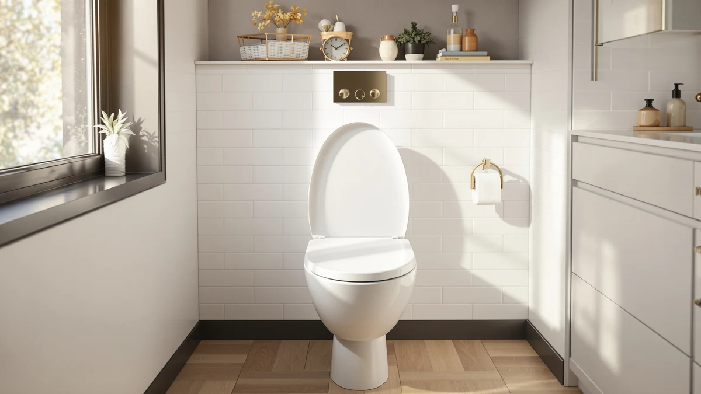

Things to Know Before You Buy
- Brand matters less than the hinge system. A slow-close hinge from Mayfair, KOHLER, or Bemis is what keeps a seat quiet and stable for years.
- Every brand sells the same two shapes: round and elongated. Measure your bowl before you pick a brand, or the seat will not fit.
- Mayfair and Bemis are the same company, so you get plumber-grade hardware at a budget price. KOHLER and Bath Royale charge more for a heavier feel.
- Wood-core seats feel warmer and more solid; plastic seats clean faster and resist chips. Neither is "better," they suit different bathrooms.
- Quick-release hinges are worth looking for. They let you pop the seat off for a real cleaning without unscrewing anything.
Shopping for the best toilet seat brands feels simple until you stand in the aisle and notice that a $20 seat and a $70 seat look almost identical. What separates them is the hinge quality, the core material, and whether the seat can survive a decade of daily use. You want a name you can trust instead of a mystery label that cracks in six months and wobbles every time you sit down.
A handful of brands own most of the US market, and each got there a different way. Mayfair, the consumer arm of Bemis, makes most of the affordable slow-close seats you scroll past on Amazon. KOHLER carries its faucet-and-fixture reputation into seats with the Cachet, Brevia, and Hyten lines. Bemis supplies the sturdy wood seats that plumbers install without a second thought. Bath Royale plays the premium-comfort angle at a mid-tier price.
Below, you will see what actually separates one brand from another, which seat types each one does well, and the buying mistakes that send people back to the hardware store twice. By the end you will know which brand fits your bowl and your budget.
What You Need to Know
Before you compare the best toilet seat brands, understand that most of them buy from a short list of the same factories and hinge suppliers. What you pay for is engineering and quality control, not some secret material. A brand earns trust when its hinges hold up, its mounting hardware stays tight, and its finish shrugs off stains and chips.
Two facts shape almost every purchase. First, Mayfair and Bemis are one company, so a "budget" Mayfair seat often uses the same STA-TITE mounting system as a pricier Bemis. Second, KOHLER seats tend to weigh more and feel more solid, which is why they cost more and why some people swear by them after years of a rattly builder-grade seat.
Fit trumps brand loyalty. The best toilet seat brand in the world will disappoint you if you order the wrong shape or your bolt spacing does not match. Round bowls measure roughly 16.5 inches from the mounting bolts to the front rim, and elongated bowls measure closer to 18.5 inches. Check that number first, then choose the brand.
Finally, watch the hinge type. Slow-close (also called soft-close or quiet-close) hinges lower the lid gently and cut the midnight bang. Quick-release hinges let you detach the seat for cleaning. The brands that do both well, mainly Mayfair, KOHLER, and Bemis, give you the least hassle over the life of the seat.
Types and Categories
The best toilet seat brands split their lineups into a few clear categories, and knowing them saves you from paying for features you will never use. Start with the core material. Molded wood seats, like the Bemis 1500EC, feel warm and solid and hide small scratches well. Plastic seats, usually polypropylene, wipe clean faster and shrug off cleaning chemicals, which is why brands like Bath Royale and KOHLER lean on them for their premium lines.
Next comes the closing mechanism. Standard seats close when you push them, and they are cheap and dead simple. Slow-close seats, now the default for Mayfair, KOHLER, and Bemis, use damped hinges so the lid drifts down on its own. They cost a few dollars more and spare your ears and your seat hardware.
Then there are specialty categories. Elevated or comfort-height seats, such as the KOHLER Hyten, add a few inches for anyone with knee or hip trouble. Bidet seats add water washing and electronics, and only a handful of brands do them well. Child-friendly seats build a smaller trainer ring into the lid.
You do not need to memorize every line. Pick your material, decide whether slow-close matters to you, and add a specialty feature only if a real need drives it. Most households land on a standard-height, slow-close seat from a mainstream brand.
How to Choose
To choose among the best toilet seat brands, work through five questions in order, and the field narrows fast.
Start with shape. Measure your bowl before anything else. Round or elongated is the one mistake you cannot fix with a good brand, so confirm it and move on. Every major brand offers both, so this step decides the model, not the maker.
Move to budget. If you want reliable and cheap, Mayfair and Bemis give you plumber-grade hardware in the $18 to $40 range. If you want a heavier, more premium feel and can spend $50 to $70, KOHLER and Bath Royale earn the upgrade. Set the number now so you do not talk yourself into features you will not miss.
Weigh the material against your cleaning habits. If you scrub with bleach or strong cleaners often, a polypropylene KOHLER or Bath Royale seat holds its finish better. If you want warmth and a traditional feel, a Bemis or Mayfair wood seat wins.
Check the hinges next. Slow-close is worth the small premium in almost every home. Quick-release hinges matter most if kids or pets make frequent deep cleaning a fact of life. KOHLER ReadyLatch and Bemis lift-off systems both do this cleanly.
Confirm install fit last. Most brands use standard bolt spacing and top-mount or bottom-mount hardware, but odd or French-curve bowls can fight you. Read a few recent reviews from people with your toilet model, then buy. Follow that sequence and you land on the right brand without a return trip.
Common Mistakes to Avoid
Most complaints about the best toilet seat brands trace back to buyer errors, not the brands themselves. The biggest one is ordering the wrong shape. People assume their bowl is elongated, skip the measurement, and end up with a seat that overhangs or leaves a gap. Measure first, every time.
Overtightening the bolts ranks second. You crank the plastic nuts hard, thinking tighter means more secure, and instead you crack the seat or strip the threads. Snug them by hand, then give a quarter turn. If the seat still shifts, that is what the Grip-Tight and STA-TITE systems from KOHLER and Mayfair are built to fix.
People also chase the cheapest listing and land on an off-brand seat with no hinge warranty. A $12 seat that fails in four months costs more than a $30 Mayfair that lasts five years. Buy the trusted brand and treat it as a long-term fixture.
One more trap: ignoring the hardware type your toilet needs. Some bowls require top-mount bolts because you cannot reach underneath. Confirm your mounting style before you order, or you will fight an install that was never going to work with bottom-mount hardware.
Care and Maintenance
A seat from any of the best toilet seat brands lasts longer when you clean it right. Wipe it down weekly with a mild cleaner and a soft cloth. Harsh abrasives and scouring pads dull the finish and, on plastic seats, leave micro-scratches that trap grime, so skip them.
Use quick-release hinges to your advantage. On a KOHLER ReadyLatch or Bemis lift-off seat, pop the seat off every month or so and clean the hinge posts and the bowl rim underneath, where buildup you never see collects. Snap it back when you finish.
Watch the hardware over time. Even good STA-TITE or Grip-Tight bolts can loosen after months of use, so check them every few weeks and hand-tighten if the seat starts to shift. Catching it early keeps the mounting holes from wearing out.
Be careful with cleaner choice on wood-core seats from Bemis and Mayfair. Bleach and heavy chemicals can attack the finish over years, so a diluted cleaner or a vinegar-and-water mix treats them more kindly. Plastic seats from KOHLER and Bath Royale handle stronger cleaners without complaint. Treat the seat like the fixture it is, and a $30 seat easily outlasts its warranty.
Our Top Picks
If you would rather skip straight to a proven seat from a trusted brand, these three cover most bathrooms. Each comes from a name with a long track record, and together they span the budget, value, and premium ends of the range. Confirm your bowl shape before you buy, since each ships in both round and elongated versions.

Editor's Pick
Mayfair Linden Slow Close Toilet
Mayfair is the brand most people should start with, and the Linden shows why. You get plumber-grade STA-TITE mounting and a quiet slow-close lid for well under $40.
$36.99
Check Price on Amazon
Best Value
KOHLER Cachet ReadyLatch Round Toilet
KOHLER brings a heavier, more solid feel, and the Cachet ReadyLatch adds quick-release hinges and Grip-Tight bumpers so it stays put and pops off for cleaning.
$56.40
Check Price on Amazon
Premium Choice
Mayfair Cassel Slow Close Toilet
The Mayfair Cassel steps up to a sturdier molded wood core and a whisper-close lid, a good pick if you want that warm, traditional seat feel without a big jump in price.
$39.62
Check Price on AmazonFrequently Asked Questions
Which toilet seat brand is the most reliable?
Bemis and its consumer brand Mayfair are the names most US plumbers reach for, because their hinges and STA-TITE mounting system hold up for years. KOHLER is the safer pick if you want a heavier, more premium seat and are willing to pay more. For most bathrooms, a Mayfair slow-close seat gives you the best reliability for the money.
Are expensive toilet seat brands worth it?
You pay more with brands like KOHLER and Bath Royale for a heavier build, quieter slow-close hinges, and a more solid feel under you. If your current seat rattles or the lid slams, the upgrade is noticeable. If you just need a functional seat that lasts, a $30 to $40 Mayfair or Bemis performs nearly as well for half the price.
Do all toilet seat brands fit every toilet?
No. Every brand sells seats in two main shapes, round and elongated, and you have to match your bowl. Measure from the seat bolts to the front rim: about 16.5 inches means round, about 18.5 inches means elongated. Most major brands, including Mayfair, KOHLER, and Bemis, offer both shapes, so pick the brand you like and then buy the shape that matches your bowl.
What is the difference between Mayfair and Bemis?
They are the same company. Bemis Manufacturing owns the Mayfair brand and uses it for the consumer seats you find on Amazon and in big-box stores. The hardware, including the STA-TITE mounting system, overlaps heavily between the two, so a Mayfair seat gives you Bemis engineering at a friendly price.
Which brand makes the best slow-close toilet seat?
Mayfair, KOHLER, and Bemis all make dependable slow-close seats, and any of the three will serve you well. Mayfair wins on value, KOHLER wins on a heavier premium feel, and Bemis is the go-to for wood-core seats. Choose based on your budget and whether you prefer a plastic or a wood surface.
Verdict
Among the best toilet seat brands, Mayfair is the one most households should buy first, and the Mayfair Linden makes the case cleanly. You get the same plumber-grade STA-TITE hardware that Bemis uses, a quiet slow-close lid, and a price under $40 that leaves no reason to gamble on an off-brand seat. Step up to KOHLER, with the Cachet or Brevia, when you want a heavier, more solid feel and quick-release hinges, and it earns the extra $20. Reach for Bemis when you want a warm wood-core seat that a plumber would install, and consider Bath Royale for a premium quilted feel at a mid-tier price. Whichever brand you pick, measure your bowl first, choose slow-close hinges, and match the material to how you clean. Do that, and a well-made seat from a trusted name will outlast its warranty and stay quiet under you long after a cheap one would have started to rattle.